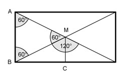

Flächenberechnungen Aufgabe 80 Die Diagonalen eines rechteckigen Platzes sind 43 m lang und schließen Winkel von 60° bzw. 120° ein. Wie lang sind die Rechteckseiten?  AM = BM, deswegen ist das Dreieck ABM gleichschenklig. Winkel bei A muss deswegen gleich 180° - 60° sein dem Winkel bei B, nämlich ------------- = 60°. 2 Alle 3 Winkel im Dreieck ABM sind gleich, deswegen ist das Dreieck gleichseitig. 43 m AB = BM = AM = ------- = 21,5 m = kürzere Seite 2 Satz von Pythagoras im Dreieck BCM: BM² = BC² + CM² |-CM² BC² = BM² - CM² 21,5 BC² = 21,5² - (------)² 2 BC² = 462,25 - 115,5625 BC² = 346,6875 |√ BC = 18,6 cm Längere Seite des Rechtecks = 2 * BC = 2 * 18,6 cm = 37,2 cm